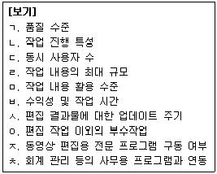
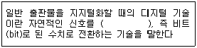
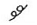
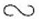

전자출판기능사 (2016-04-02 기출문제)
1과목: 출판론
1. 출판의 기능 중에서 다른 미디어가 추종할 수 없는 출판미디어가 가지고 있는 탁월한 기능은?
- 문화의 광고기능
- 문화의 동원기능
- 문화의 단절기능
- 문화의 보전・전달기능
(정답률: 88%)

2. 다음 중 도서의 구성요소별 설명으로 틀린 것은?
- 표제면에는 책명, 저자명, 출판사명 등을 넣는다.
- 차례는 도서의 내용구성을 파악하는 지름길이다.
- 판권은 저작자의 집필 동기 및 그 내용을 간추려 싣는 것이다.
- 본문은 도서의 알맹이 부분으로 편집자의 노력이 가장 많이 가는 부분이다
(정답률: 85%)
3. 다음 중 역사적으로 살펴본 출판과 인쇄 기술에 대한 설명으로 틀린 것은?
- 무구정광대다라니경 : 현존하는 가장 오래된 목판 인쇄물
- 팔만대장경 : 고려시대 호국불교의 바탕으로 만들어진 활판 인쇄물
- 금강반야바라밀경 : 중국에서 가장 오래된 현존 목판 인쇄물
- 한성순보 : 대한민국최초의 신문이며 활판 인쇄물
(정답률: 52%)
4. 다음 중 제책공정에서 본문과는 별도로 인쇄하여 본문의 전후 혹은 중간에 부속물 인쇄 등을 끼워 넣는 것은?
- 쪽맞추기
- 딴쪽접기
- 고르기
- 나눔절단
(정답률: 61%)
5. 책을 구성하는 요소들의 일반적인 순서를 가장 바르게 나열한 것은? (단, 표지는 제외한다.)
- 표제지-차례-머리말-판권-본문
- 표제지-머리말-차례-본문-판권
- 머리말-표제지-차례-본문-판권
- 머리말-차례-표제지-본문-판권
(정답률: 80%)
6. 다음 중 출판의 기능으로 가장 거리가 먼 것은?
- 속보의 기능
- 오락의 기능
- 교육과 계몽의 기능
- 정보 및 지식제공의 기능
(정답률: 73%)
7. 기업에서 일상적으로 처리하는 주문서, 송장 등과 같은 기업 간의 상거래 정보를 종이로 된 문서나 전표 대신에 컴퓨터가 처리할 수 있는 표준화된 형태와 코드체계를 이용하여 컴퓨터 간에 전자적인 정송수단을 통해 교환하는 시스템을 무엇이라 하는가?
- ISBN(International Standard Book Number)
- EDI(Electronic Data Interchange)
- DOI(Digital Object Identifier)
- VAN(Value Added Network)
(정답률: 65%)
8. 평판 제판의 빛쬠 작업에서 광원의 거리가 30㎝일 때 10초가 적정노출이라면 광원의 거리를 60㎝로 하면 적정 노출시간은 얼마인가?
- 10초
- 20초
- 40초
- 80초
(정답률: 52%)
9. 단행본에 대한 설명으로 옳지 않은 것은?
- 발행목적에 따라 학술서, 교양서, 전문서 등이 있다.
- 발행권수에 따라 단권 완결형, 복수권 완결형으로 분류한다.
- 단행본이란 소형의 경장본(주로 A6판)으로 대중보급을 목적으로 한다.
- 영업성 유무에 따라 판매품과 비매품으로 분류한다.
(정답률: 60%)
10. 다음 출판기획에 있어 단기기획의 특징에 해당하는 것은?
- 저자 주도형 출판기획인 경우가 많다
- 성취단계를 연차적으로 안배하여 균형을 꾀해야 한다.
- 시설, 자본, 인적 규모가 큰 대형출판사에 적합한 출판사업 유형이다.
- 전담팀의 설치를 필요로 하며, 지원 및 보조업무를 수행할 하부조직이 편성되어야 한다.
(정답률: 68%)
11. 일반적으로 인쇄의 4방식 중 습수롤러를 주로 사용하는 방식은?
- 평판 인쇄
- 오목판 인쇄
- 공판 인쇄
- 볼록판 인쇄
(정답률: 57%)
12. 다음 중 페이지물의 배치 방법에 해당되지 않는 것은?
- 넘겨찍기
- 중앙 걸어찍기
- 따로 걸어찍기
- 같이 걸어찍기
(정답률: 48%)
13. 제판용 감광재료는 빛과의 반응에 의해 상을 형성하는데 현재 널리 이용되고 있는 포지티브형 PS판은 주로 어떠한 광반응을 일으켜 상을 형성하는가?
- 광가교
- 광중합
- 광이량화
- 광분해
(정답률: 67%)
14. 제판법에 의한 분류 중 물과 기름의 반발작용을 이용하는 인쇄판은?
- 볼록판
- 오목판
- 평판
- 공판
(정답률: 61%)
15. 국제표준도서번호(ISBN)의 코드순서를 차례대로 옳게 나타낸 것은?
- 국가번호-발행자번호-도서명식별번호-체크기호
- 국가번호-체크기호-발행자번호-도서명식별번호
- 체크기호-국가번호-발행자번호-도서명식별번호
- 체크기호-도서명식별번호-발행자번호-국가번호
(정답률: 66%)
16. 둥글림을 한 속장의 책등 양끝을 기울이면서 귀를 내는 작업을 무엇이라고 하는가?
- 배킹(backing)
- 쪽맞추기(gathering)
- 등굳힘(gluing)
- 고르기(pressing)
(정답률: 63%)
17. 오프셋 인쇄기를 피인쇄체의 크기로 구분한 것이 아닌것은?
- 국반절 인쇄기
- 4 × 6 전지 인쇄기
- 4절 인쇄기
- 4도 인쇄기
(정답률: 71%)
18. 일반적인 스크린 인쇄의 특징에 해당하지 않는 것은?
- 설비와 제판공정이 간단하다.
- 작은 부수의 인쇄물에 적합하다.
- 잉크막을 두껍게 인쇄할 수 있다.
- 대량인쇄에 가장 적합한 인쇄방식이다.
(정답률: 58%)
19. 출판물 편집 시 출판물의 대체적 내용을 쪽수에 따라 표시해 놓고 대수 등을 표시해 놓은 양식은?
- 인쇄 일정표
- 편집 배열표
- 제작 사양서
- 제작 일정표
(정답률: 80%)
20. 다음 중 아동도서 개발에 있어서 유의할 점으로 가장 거리가 먼 것은?
- 어른의 생각이나 믿음 강요
- 기획의 참신성과 독창성 고려
- 연령층에 따른 심신의 발달 단계 고려
- 그림책에 있어서 문자 배열과 지면 구성에 세심한 주의 필요
(정답률: 89%)
2과목: 전자 출판
21. 온라인 전자출판에 관한 설명으로 옳은 것은?
- 신속성이 다소 떨어진다.
- 검색이 용이하기 때문에 독자는 필요한 내용만을 골라 읽을 수 있다.
- 온라인 출판물은 일단 종이출판을 먼저 한 후에만 온라인으로 출판을 할 수 있다.
- 출판물의 보관과 데이터베이스를 구축하기 위한 시스템의 공간이 많거나 크지 않아도 된다.
(정답률: 73%)
22. 멀티미디어 요소 중 사운드 파일 포맷이 아닌 것은?
- PCM
- GIF
- WAV
- MIDI
(정답률: 86%)
23. 전자출판물이나 전자통신출판시스템 등과 같은 전자매체를 기존의 인쇄매체와 비교할 경우 장점에 해당되지 않는 것은?
- 정보의 2차 가공이 쉽다.
- 타 매체와 적응력이 우수하다.
- 보관이 용이하며 보존력이 뛰어나다.
- 기기를 조작할 필요가 없고 대조 능력이 뛰어나다.
(정답률: 70%)
24. 전자출판의 정의에 대한 설명으로 거리가 먼 것은?
- 스크린상에서 내용을 불러낼 수 있고, 컴퓨터 검색이 가능한 형태로 출판하는 것을 말한다.
- 문헌을 전자적으로 편집・가공・기록하고 전자적으로 표시・전송・제공하는 시스템・기기・매체를 지칭하는 용어이다.
- 디지털 신호를 이용한 컴퓨터나 다른 전자기기를 사용해 네트워크상으로만 출판물을 제공하는 것을 말한다.
- 인간의 사상과 감정 및 지식 전달을 목적으로 표현한 내용을 전자적인 방법으로 편집하여, 인쇄거나 디지털 매체로 배포하는 것을 말한다.
(정답률: 61%)
25. 전통적인 출판과정에서 전자출판, 즉 DTP과정으로 변환되는 단계 중 불필요하게 된 작업은?
- 제책 작업
- 원고 작성
- 사진입력 작업
- 대지작업에 따른 편집 레이아웃
(정답률: 41%)
26. 전자출판물을 종이출판물과 비 종이출판물로 구분할 때, 비 종이출판물에 대하여 가장 올바르게 설명한 것은?
- 종이매체가 아닌 디스크매체나 통신망매체에 배포된 출판물이다.
- 종이매체가 아닌 진흙이나 비석에 새겨진 출판물이다.
- 게임 소프트웨어를 말한다.
- 클래식 음악 연주를 녹음한 음반을 말한다.
(정답률: 84%)
27. 다음 중 폰트에 관한 설명으로 옳은 것은?
- Postscript는 출력할 때 글자꼴의 모양을 점으로 찍어서 나타내는 방식이다.
- Bitmap은 출력할 때 글자체를 와곽선으로 그려내고 그 안을 채우는 방식이다.
- True Type은 화면의 글지꼴과 출력 글자꼴이 일치하여 WYSIWYG가 가능하다.
- 고해상도 출력을 위해서는 Bitmap 폰트 방식으로 출력해야만 한다.
(정답률: 65%)
28. 다음 보기 중 전산편집 시스템을 구성하기 위해 점검하여야 할 사양 및 작업 요건으로만 나열된 것은?

- ㄱ, ㄴ, ㄷ, ㄹ, ㅁ
- ㅂ, ㅅ, ㅇ, ㅈ, ㅊ
- ㄱ, ㄷ, ㅁ, ㅅ, ㅈ
- ㄴ, ㄹ, ㅂ, ㅇ, ㅊ
(정답률: 51%)
29. 다음 중 전자출판물로서 디스크 책이 종이책과 비교하여 갖는 특징으로 틀린 것은?
- 디스크 책은 대량의 정보를 제공할 수 있다.
- 디스크 책은 유통비용이 많이 든다.
- 디스크 책은 필요한 정보를 신속하게 찾아볼 수 있다.
- 디스크 책은 소리, 영상 등 멀티미디어 기능을 포함할 수 있다.
(정답률: 88%)
30. 먼셀 표색계에 대한 설명으로 틀린 것은?
- 최소 주색상의 수가 5가지이다.
- 명도는 1이 흰색, 10이 검정색이다.
- 명도는 10진법 체계에 기초하여 표현한다.
- 기본 원리가 시감간격의 균일성엔 기초한다.
(정답률: 58%)
31. 다음 중 전산편집 전용 프로그램에 해당하는 것은?
- 드림위버
- 메모장
- 쿽익스프레스
- 익스플로어
(정답률: 71%)
32. 다음 중 인쇄출판에 사용하기에 가장 적합하지 않은 디지털 폰트는?
- 트루타입
- 포스트스크립
- 타입 1
- 비트맵
(정답률: 62%)
33. 컴퓨터의 발전에 따라 변화하고 있는 출판환경에 대한 전망이 잘못된 것은?
- 프리프레스 산업은 출판의 디지털화가 가속될수로 더욱 공정이 세분화된다.
- 한 가지 원고로 다양한 형태의 출판물을 제작할 수 있다.
- 다품종 소량 생산의 형태로 제작이 가능하다.
- 디지털 인쇄기의 등장으로 주문자 요구 출판이 가능해졌다.
(정답률: 61%)
34. 다음 중 디지털 이미지의 최소 단위를 의미하는 것은?
- 포인트
- 비트
- 픽셀
- 파이카
(정답률: 83%)
35. 다음 중 DTP로 편집할 때 교정, 수정작업을 설명한 것으로 올바른 것은?
- 모니터에 조판된 데이터를 떠올려서 교정지의 수정 지시대로 수정한다.
- 대지에 붙인 사진식자를 칼로 잘라서 교정 지시대로 수정한다.
- 교정 지시대로 활자를 손으로 갈아 끼우거나 빈 칸을 만들어 수정한다.
- 조판된 인쇄용 필름에 수정지시대로 잘라 붙인다.
(정답률: 77%)
36. 다음 중 전자출판물의 제작과정에 대한 설명으로 틀린 것은?
- 기획단계, 개발단계, 대량생산 단계로 나눌 수 있다.
- 기획단계에서는 제작의 타당성을 검토한다.
- 개발단계에서는 준비된 내용이나 수집된 정보 등을 종합적으로 검토하여 멀티미디어 표현이 가능하도록 내용을 재구성한다.
- 대량생산 단계에서는 스토리 보드를 작성하고 마스터 CD를 대량으로 제작한다.
(정답률: 73%)
37. 책과 문화의 관계를 잘못 표현한 것은?
- 문화의 전달
- 문화의 억제
- 문화의 창조
- 문화의 보호
(정답률: 90%)
38. 디지털 출판 환경이 출판 산업에 미치고 있는 영향에 대한 설명으로 틀린 것은?
- 출판 산업이 콘텐츠를 매개로 하는 정보산업으로 변신하고 있다.
- 복잡한 디지털 환경으로 출판의 비효율성을 낳고 있다.
- 출판 콘텐츠의 부가가치가 극대화되고 있다.
- 소프트웨어 업체와 출판사간의 전략적 제휴가 늘어나고 있다.
(정답률: 83%)
39. 다음 설명 중 괄호 안에 들어갈 알맞은 말은?

- 2진수
- 8진수
- 10진수
- 12진수
(정답률: 69%)
40. 다음 중 DTP 시스템을 구축하는데 가장 불필요한 것은?
- 스캐너
- 립(RIP)
- 전산사식기
- 편집 소프트웨어
(정답률: 64%)
3과목: 전산 편집
41. 일반적인 문자교정과 교열에 관한 설명으로 거리가 먼 것은?
- 맞춤법에 따른 오자와 탈자를 바로 잡는다.
- 외래어 표기와 용어 통일 등의 문장을 바로 잡는다.
- 입력과 편집 과정에서 생긴 오류를 바로 잡는다.
- 주로 그라데이션과 컬러를 출력되기 전에 바로 잡는다.
(정답률: 85%)
42. 열 용해성 잉크를 친한 필름 리본에 열을 가해서 녹인 잉크를 용지에 전사하는 교정방식은?
- 인쇄 방식
- 사진 방식
- 페이지프린터 방식
- 열전사 방식
(정답률: 83%)
43. 책의 내용을 구성하는 요소 중 본문에서 소개하지 못한 그림이나 자료 등을 정리한 페이지는?
- 머리말
- 차례
- 부록
- 찾아보기
(정답률: 79%)
44. 다음 중 책자 규격으로 옳은 것은?
- 4×6판 : 94 × 148mm
- 국반판 : 1⑤ × 148mm
- 국배판 : 188 × 210mm
- 국판 : 188 × 257mm
(정답률: 43%)
45. 단락이 바뀔 때 읽는 사람으로 하여금 단락이 바뀌었음을 알려주는 방법으로 첫 글자를 한 글자만큼 안쪽으로 짜는 것을 무엇이라 하는가?
- 들여쓰기
- 내리기
- 앞줄맡추기
- 이니셜
(정답률: 84%)
46. 레이아웃에서 배색에 대한 설명으로 적절하지 않은 것은?
- 배색을 할 때는 색상, 명도, 채도, 면적과 배치 등을 모두 고려해야 한다.
- 한 가지 계통의 색만으로 배합하는 것은 통합감은 뛰어나지만 단조로운 것이 흠이 된다.
- 황색과 황록색 같은 근사색의 배합은 약간의 변화를 주고 싶을 때 효과적이다.
- 흑색이 섞인 암색만을 배합하면 경쾌한 느낌을 얻을 수 있다.
(정답률: 85%)
47. 디지털 방식에서 사용하는 화상의 해상도를 나타내는 단위로서, 1인치당 망점(dot)의 수를 표시하는 것은?
- dpi
- contrast
- bit
- pdi
(정답률: 76%)
48. 다음 중 사진원고 등의 이미지를 스캔하려 할 때 가장 중요한 것은?
- 보정
- 이미지 선수
- 원본의 화질
- 색의 수
(정답률: 79%)
49. 교정의 지시는 교정기호(校正記號)로 하고 있는데, 다음에 예시하는 것들 중 앞뒤 글자의 위치를 바꿀 때 쓰이는 기호는?


- //
(정답률: 89%)
50. 다음 중 국・한문 기본 서체에 해당하지 않는 것은?
- 사체
- 명조체
- 고딕체
- 그래픽체
(정답률: 44%)
51. 오스트발트의 색입체를 수평으로 잘랐을 때 나타나는 것은?
- 동일 채도면
- 동일 색상면
- 동일 명도면
- 동일 조도면
(정답률: 43%)
52. 가독성에 대한 설명 중 옳은 것은?
- 배열된 문장의 길이는 길수록 가독성이 좋다.
- 자간보다 행간이 좁을 글은 읽는 눈의 흐름이 좋다.
- 행간이 지나치게 좁으면 행을 바꿔 읽기가 힘들다.
- 글자가 가지고 있는 공간보다 자간이 좁을수록 가독성이 좋다.
(정답률: 76%)
53. 다음 중 레이아웃의 개념과 맞지 않는 것은?
- 읽는 심리를 원활하게 한다.
- 가독성이 좋아야 한다.
- 기억에 남도록 해야 한다.
- 질이 좋은 종이를 사용한다.
(정답률: 84%)
54. 다음 중 색상 교정에서 가장 주안점을 두고 보아야 할 사항은?
- 색상의 선명도
- 색감의 안정성
- 본문과의 조화
- 편집시 지정한 색상의 재현 확인
(정답률: 58%)
55. 다음 중 빛에 의한 컬러 TV의 가법혼색은?
- 맥스웰의 혼색
- 계시 가법 혼색
- 병치 혼색
- 회전 혼색
(정답률: 63%)
56. 다음 중 해상도에 대한 설명으로 틀린 것은?
- 픽셀 해상도랑 픽셀을 만드는데 사용되는 색상의 수를 말한다.
- 비트맵 이미지의 물리적 크기를 크게 하면 해상도는 높아진다.
- 이미지 해상도란 하나의 비트맵 이미지가 몇 개의 픽셀로 구성되었는지를 뜻한다.
- 화면 해상도란 이미지를 화면에 표시할 때 정밀함의 정도를 나나내는 것으로 단위는 ppi를 쓴다.
(정답률: 66%)
57. 다음 중 단행본 표지를 디자인할 경우 유의해야할 사항으로 가장 거리가 먼 것은?
- 책등의 폭은 책 두께를 정확하게 예측해야 한다.
- 앞・뒷날개의 폭은 앞・뒷면 폭의 1/3 이하가 가장 적당하다.
- 앞면과 뒷면의 디자인은 5mm 정도 더 크게 하여 절단 시 꼭 맞거나 부족하지 않도록 한다.
- 책디자인, 책제목, 저자명, 출판사명 뿐 아니라 책 내용 중에 정수에 해당되는 구절이나 목차, 저자사진을 함께 싣는 것도 좋다.
(정답률: 46%)
58. 먼셀표색계에서 먼세의 5주요 색상이 아닌 것은?
- R(빨강)
- Y(노랑)
- P(보라)
- W(흰색)
(정답률: 71%)
59. 같은 크기의 직사각형 빨강과 자주를 나란히 놓았을 때, 경계 부근에서 빨강은 더욱 선명하고 깨끗하게 보이며, 경계면에서 먼 쪽은 탁해 보이는 현상은 주로 어떠한 대비현상 때문인가?
- 연변대비
- 색상대비
- 명도대비
- 채도대비
(정답률: 51%)
60. 컬러가 일관되게 나타나도록 스캐너, 모니터, 프린터 등의 주변기기에 사용되는 모든 하드웨어 장치의 컬러 특성을 일치시키는 것은?
- 오페레이팅 시스템
- 캘리브레이션
- 소프트 프루핑
- 래스터 이미지 프로세싱
(정답률: 67%)